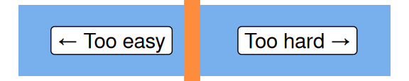
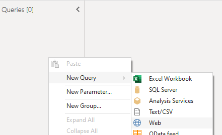
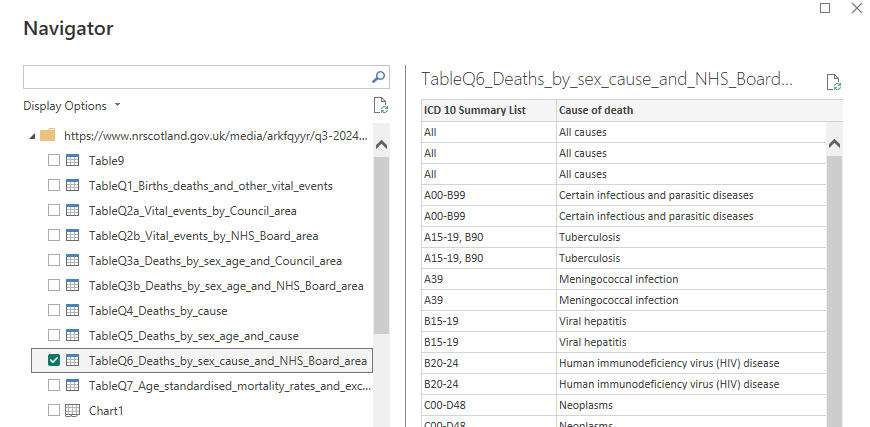
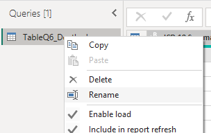
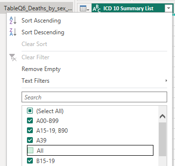
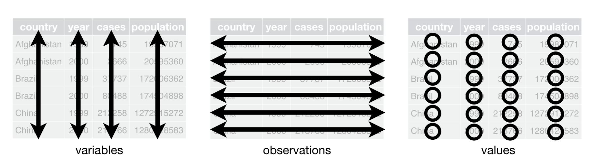
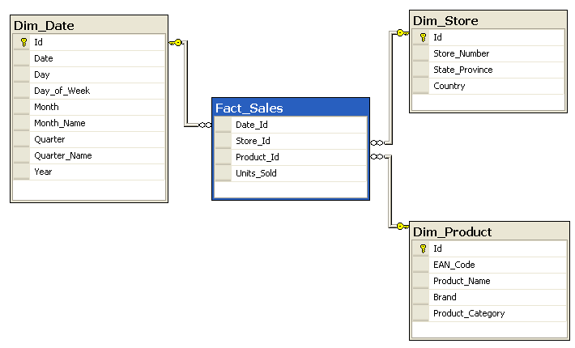
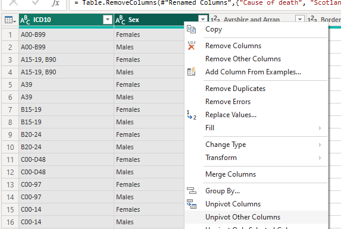
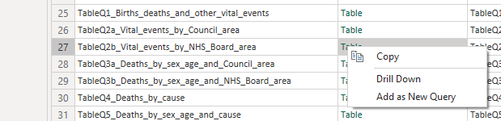
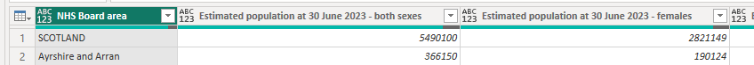

Intermediate Power BI (session 3)
This is part of our intermediate-level Power BI desktop course. The course structure is as follows:
- session 1 (this session): a simple build-a-dashboard session as a warmup, reminder about core Power BI techniques, and sharing some suggestions for good workflow practices
- session 2: DAX language foundations, including FILTER and CALCULATE
- session 3 (this session): core PowerQuery functions to manage sources, join data sets, pivot, and tidy values
- session 4: PowerQuery M language foundations, including a basic overview of syntax, a core function toolkit, advanced mode, and reproducibility
- session 5: a second, more ambitious, build-a-dashboard session to put all that PowerQuery and DAX knowledge into practice
Previous attendees have said…
- 15 previous attendees have left feedback
- 100% would recommend this session to a colleague
- 93% said that this session was pitched correctly

- Really helpful to understand Power Query functions and techniques including Key Value pairs, unpivoting columns and tips such as how to clean and tidy data.
- This was just at the right level for me, new material just beyond my abilities that I need to follow closely during the session to keep up with, but not too advanced. Having practice in-between is crucial and has really helped build confidence and follow the sessions more easily. The key point is the pacing and how well they are delivered. Really excellent.
- I thought the session was extremely useful and definitely intermediate level. I’m keen to start using the skills I’ve learned today. The break was a little longer today which was helpful.
| Booking link | Date |
|---|---|
| Intermediate Power BI (session 3) | 10:00-12:00 Tue 12th May 2026 |
Session aim
This session will revise some core Power Query (PQ) functions. We’ll spend most of the session then using those techniques to remodel a dataset so that it performs well in Power BI. In the next session, we’ll cover a basic introduction to PQM, which is the formula language used in Power Query.
Session outline
- reminder about the core PQ workflow: sources and connections, data types, working with queries, filtering, and query steps
- joins and relationships
- data formats for Power BI - tidy data, and key-value pairs, and inter-converting with pivots
- normalising and the star schema
Data for this session
- we’ll use the NRS vital events data for Q3 2024
- that’s a complex Excel spreadsheet containing national birth, death, and marriage information
- we’ll talk about how to load it during the first few minutes of the session
Getting started
- open Power BI
- create a blank report
- then click
Tranform datato open PQ
Loading data from Power Query
- all the Power BI connectors are available within Power Query
- that’s especially helpful if you have lots of data loading to do
- for this session, please make a new query using
New query > Web, and supply the link for the NRS vital events data for Q3 2024: https://www.nrscotland.gov.uk/media/arkfqyyr/q3-2024-data.xlsx

Tables and sheets
- we want to load table 6, so please import that table from the navigator (
TableQ6_Deaths_by_sex_cause_and_NHS_Board_area) 
Revision
Names
PQ query names matter, because they’ll produce your table name in Power BI - fix the query name to cause_death 
Column names are also important in PQ, because most functions work by referencing column names. Single-word strongly preferred to keep things simple. - rename ICD 10 Summary List to ICD10 - rename Cause of death to cause_death
Data types
Data types matter in PQ: functions often need the correct data types. PQ will generally correctly infer data types, but it pays to manually double-check the data types in the column headers
Filtering
A reminder that filtering rows is destructive in PQ, unlike Excel - remove the three All rows 
Duplicating vs referencing queries
- a duplicate query is an independent copy of a query that can be tweaked/extended
- a referenced query takes the output of a query, and uses it as the starting-point for additional work
- duplicate your
cause_deathquery, and rename tocause_death_long
Long vs wide data
- Here’s an example table of made-up data about defibrillators (with thanks to sja.org.uk:
| HB | HBName | AED count | AED product code | Manufacturer | AED model name | Unit cost | Weight (kg) |
|---|---|---|---|---|---|---|---|
| S08000015 | NHS Ayrshire and Arran | 4 | H81004 | Philips | Philips HeartStart FRx Semi-Automatic Defibrillator with Carry Case | 1250 | 1.6 |
| S08000016 | NHS Borders | 3 | H81004 | Philips | Philips HeartStart FRx Semi-Automatic Defibrillator with Carry Case | 1250 | 1.6 |
| S08000015 | NHS Ayrshire and Arran | 9 | H41000 | ZOLL | ZOLL AED 3 Fully Automatic Defibrillator | 1305 | 2.5 |
Call this wide-format data, meaning that it follows the following rules:
- one value per cell
- observations in rows
- variables in columns

Shaping your data
Wide data is common, especially if you’re coming from Excel, and for simple applications, Power BI can work with it reasonably well. However, for more complex dashboards, it’s worth thinking differently about your data.
- two main approaches found in Power BI:
- Excel-like tidy data
- SQL-like relational data
- tidy data is conceptually easier to build
- joins/merges
- splitting columns
- but really Power BI prefers relational data
- more performant
- easier to manage complex datasets
Relational data in two minutes
- break your data into multiple tables
- make sure each item has an appropriate key
- build relationships between those keys
Excel example
- open the sample Excel spreadsheet
- that’s got this full AED dataset in wide format on the
Wide_aed_datatab - then a set of three tables showing how that dataset can be broken into relational tables with keys
- we’re going to work in Excel to repeat that process of breaking into tables
Break into tables
| HB | HBName |
|---|---|
| HB | AED count | AED product code |
|---|---|---|
| AED product code | Manufacturer | AED model name | Unit cost | Weight (kg) |
|---|---|---|---|---|
A note on efficiency
- Many aspects of Power BI are intended to use this sort of relational data
- That often means better performance, and less messing around
- estimate how many pieces of data are in your three tables, vs the one big table
- But it does require you to think about more tables, and more relationships, in your model
Star schema
- you might also see Power BI data described as a star schema  image: Wikimedia
{kind=link}
Reshaping our causes of death data in Power Query
- basic workflow: duplicate, check/add keys, delete columns, filter to unique rows
- we’ll break out the cause of death parts of the data into a new table
- we’ll use the ICD 10 codes as a key
- duplicate the
cause_deathquery and rename toICD - remove everything but
ICD10andcause_deathfromICD - remove duplicates via
Remove Rows > Remove Duplicates
Key-value pair data
| Key | Value |
|---|---|
| Pneumonia | 144 |
| Asthma | 20 |
| Influenza 3 | 2 |
Reshape cause_death to key-value
- remove the
cause_deathcolumn - then unpivot everything but
ICD10andSex - rename your new Attribute/Value columns to
boardandn - filter out the
Scotlandvalues from your board column
Create national data for benchmarking
- duplicate
cause_death - name that new query
national - remove everything but the national data with
= Table.SelectColumns(#"Filtered Rows",{"ICD 10 Summary List", "Scotland", "Sex"}) - then go back to the earlier filter, where you removed the total rows, and re-add them to your dataset
More data, same source
- go back to source step of the
cause_deathquery - find the table data in the row
TableQ2b_Vital_events_by_NHS_Board_area - right-click the
Table, and selectAdd as New Query - rename that new query
population
Make a population table
- remove the top three rows
- then
Use First Row as Headers - remove everything but the females and males columns 
- remove the
nullrow - replace
SCOTLANDwithScotland - rename
NHS Board areatoBoard - clean and trim the
boardvalues - unpivot the population columns to
SexandPopulation - replace values and change case in the
Sexcolumn to leaveMaleandFemalevalues
Relationships
- Power BI works best when single columns are used for relationships
- create merged
board-sexcolumns for relationships
Additional data sources
- you might like to add in a second data source at this point for practice
- e.g. population estimates, which could be added as a web source
- or second quarter 2024 NRS vital data as an Excel file